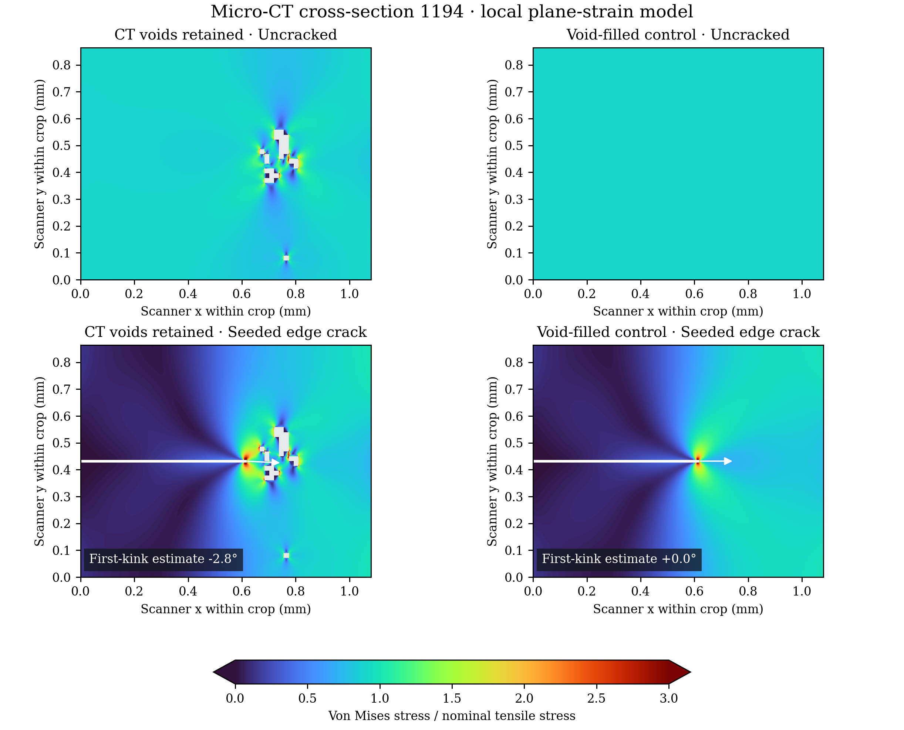

Along the natural tooth plane
A longitudinal plane stays parallel to the crown–root face and moves through the tooth’s thickness. The apex points upward; both roots remain below.
FORM / FORCE / DEEP TIME
Full-resolution static plates and 3MF downloads are available in the original archive. Go to files.
PRINT AXIS / COMPLETE SPHERE
MATERIAL / LIGHT / PROCESS
A glass-and-opal edition alongside the original Source to Sculpture posters.
The complete native surface preserves every original internal cavity wall. Exact 18 µm binary planes are retained separately. Artistic grey and filtered intensity textures use a labelled 144 µm display cache, pooled from every original CT voxel.
Basic mask-aware filtration and patch-intensity MPPCA are display derivatives. Original voxel masks, 3MF colours and numerical stresses remain unchanged. Residuals describe the display change, not an error against anatomical ground truth.
ORIGINAL CT / MATERIAL AND VOID
Original binary segmentation planes expose internal spaces without image interpolation. Native porous-volume FEM remains unsolved; the current colour field belongs to the explicitly identified closed-solid proxy.
A longitudinal plane stays parallel to the crown–root face and moves through the tooth’s thickness. The apex points upward; both roots remain below.
Axial, coronal and sagittal scans show the selected specimen, with moving area and mean-intensity lines in the measured scanner coordinate frame.
Each movie contains 3,050 frames at 25 fps (122 seconds). Playback time is separate from scan acquisition, growth and mechanical time.
At the three largest sampled sections, the original/fine-extension trace crossings are 1/5 (PCA 1), 0/2 (PCA 2), and 6/42 (PCA 3). Manuscript section plate · Section coordinates, jaw controls and analysis code
The original 18 µm specimen mask excludes surrounding scanner background; internal low-density spaces remain visible. This isolates the display and does not correct beam hardening or identify preserved soft tissue. The longitudinal movie reslices a documented 36 µm display cache on a 72 µm grid. It adds no acquired resolution and does not force the outline into a triangle. Area–intensity correlations describe spatially dependent sections, without biological significance tests.
Source, sampling and checksum record

White denotes selected mineralized material; black denotes background or CT-derived void. These binary masks do not identify the biological composition of each low-density region.
LOCAL CT MECHANICS
An original 18 µm CT section through candidate tube 2 was modelled in plane strain, first with the resolved voids and then with the same voids filled. Both models use the same assumed tensile displacement and material properties.

Within 36 µm of the selected void, the uncracked von Mises Q95 was 1.355× the nominal axial stress, compared with 0.894× in the filled control. The retained-void model predicted an initial crack kink of −2.75° at the finest numerical setting, compared with 0° in the filled control. The sign persisted across four meshes and its magnitude changed with refinement.
Physical sections of other O. megalodon teeth show small canals that micro-CT missed. Mineral infill has also been imaged in fossil shark dentine tubules. The voids here describe the segmented fossil. Identifying tissues and estimating porosity during life would require registered histology and mineral-phase evidence. Comparative histology · Fossil infill microscopy.
Matched 3D controls. Nine P1 cases and three same-mesh P2 cases compare support depth and discretisation. The local tests vary window size and substitute equal-volume sphere and ellipsoid cavities under the same affine displacement. Results · PDF · Code and exact inputs · ZIP
Mesh, loading and fit results · JSON · Replay code and exact voxel crop
ORIGINAL PAPERS
| Source | Application in this study | Original publication |
|---|---|---|
| Leonhard Euler · 1744 De curvis elasticis | Elastic curves; the Euler–Bernoulli limit used for the frame beams. | Latin archive · Appendix I Complete 1933 English translation |
| Weichang Qian · 钱伟长 Published as Wei-Zang Chien (1944) The intrinsic theory of thin shells and plates |
Qian’s general framework for curved plates and shells. This study models the spherical junctions with three-dimensional elasticity. | I · General theory · 297–327 · Publisher PDF II · Thin plates · 43–59 · Publisher PDF III · Thin shells · 120–135 · Publisher PDF Earlier paper with J. L. Synge (1941) · library record Pietraszkiewicz’s 2010 extension of Qian’s theory · open PDF |
| von Kármán & Xuesen Qian · 钱学森 (published as Hsue-Shen Tsien) · 1939 / 1941 | Nonlinear buckling of spherical and cylindrical shells. The cylindrical solution omits end effects and does not supply a spherical-junction edge stress field. | 1939 · Spherical shells 1941 · Cylindrical shells Original cylindrical paper · reprint PDF |
| W. H. Wittrick · 1964 A non-linear theory for the edge stresses in thin shells | Edge bending and curved-shell boundary layers. Static redistribution is distinct from a time-resolved stress wave. | International Journal of Engineering Science 2, 155–177 |
Current preprint · 12-page PDF
Reproducibility code, inputs and manifest · ZIP
Earlier 25 November edition · legacy PDF
The comparison models in the paper are credited beside their figures. The juvenile white shark jaw is from Auckland Museum under CC BY 4.0. The body-form comparison cites Shimada et al. (2025).
The independently documented 1 MPa pressure study, fixed-boundary tables, support mechanics and its earlier interactive assembly remain available in the preserved R14 edition.
Open the full earlier study and support visualizerGEOMETRY / FIELD / REPRODUCTION
Complete 5 cm and 10 cm models, numerical fields, file properties and the original scan-derived master.
Model exports retain their archived R5 colour fields. The recovered R7 display field and its registration record are available above. Geometry remains complete.
3MFMillimetres, full indexed geometry, shared stress palette, per-size physical metadata and source record. Keep native colour support enabled when importing.
STLComplete surface in binary STL. Select millimetres on import. STL carries geometry only; its numerical field and material properties are in the accompanying JSON/NPZ.
OBJComplete indexed surface with its matching MTL palette. Extract the ZIP, keep OBJ and MTL together, and set the scene unit to millimetres.
ORIGINAL NATIVE MASTER
74,293,846 faces · 37,951,699 vertices · 753.28 MB
SHA-256 · 69928fc1d776a0cb2cd3da389802e0b08d226395005bbf4a2094180e90622b73ARCHIVAL SPECIMEN COLOUR
32,687,264 triangles · 347.33 MB
Photograph-referenced natural colour on the repaired CT surface. Reverse-side appearance is inferred.
SHA-256 · 94cea43e98f914aef09c56504ff9c16c1b490f24124a6815c2e90a84288abeb7The download manifest distinguishes native geometry, the solved volume mesh and display projections. It records dimensions, units, surface area, volume, loads, material assumptions, refinement history, byte sizes and checksums.